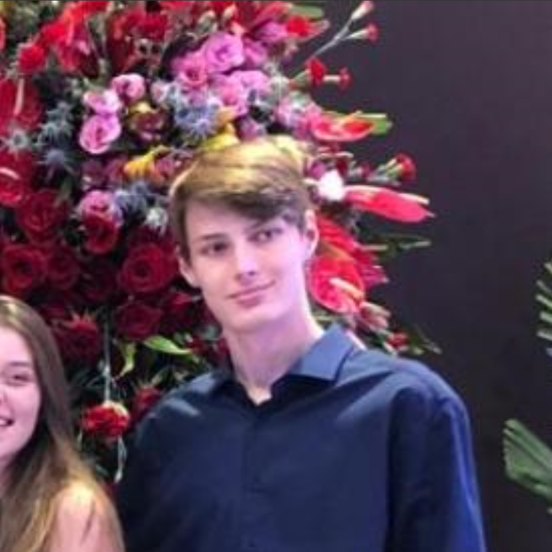
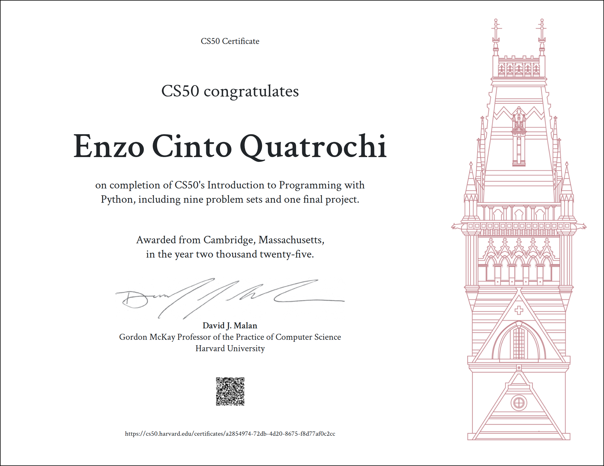

Olá, eu sou o Enzo
DESENVOLVEDOR FULL-STACK
Sou estudante de engenharia de software na Puc Campinas.
Buscando as respostas que a paixão pela
programação me trouxe desde pequeno.

Sobre Mim
Estou no 7° semestre de engenharia de software na Puc-Campinas. Buscando a oportunidade para aplicar minhas habilidades em desenvolvimento de software.
Além do curso de engenharia de software busco aprender mais sobre a área através de trabalho voluntário e do projeto de extensão da Puc-Campinas, cursos extra curriculares e plataformas como leetcode.



Algumas tecnologias que estou familiarizado são Python, pytest, fastapi, pandas, matplotlib, C, TypeScript, Java, Oracle, Oracle Virtual Machine, Postgres, MySql, MongoDB, Redis, CI/CD, Linux (ubuntu/popOS), Clean Code, Clean Architecture, SOLID, System Design.
Projetos
CS50P Final Project
Desenvolvido como projeto final para o curso do CS50 Introduction to Programming with Python de Harvard o programa realiza uma assinatura digital em arquivos pdf simulando uma validação dos cursos do CS50.
Conheça Mais AquiCinepick
O aplicativo implementa uma rede social com recomendações de filmes personalizadas pra cada usuario.
Conheça Mais Aqui